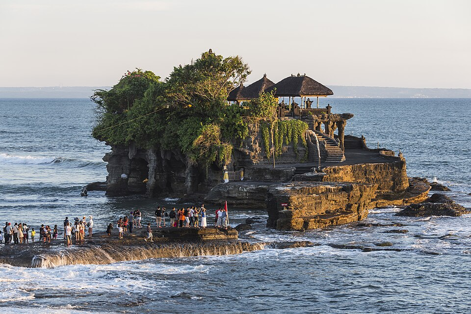
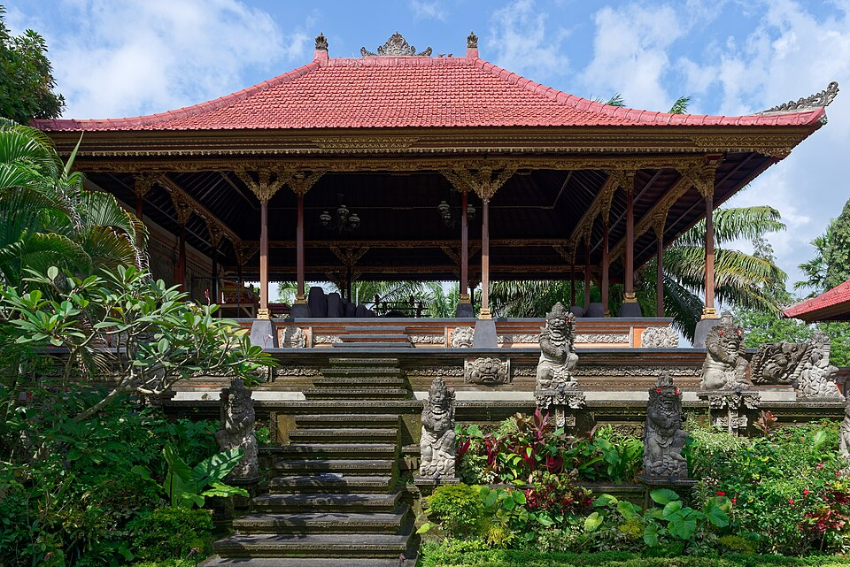
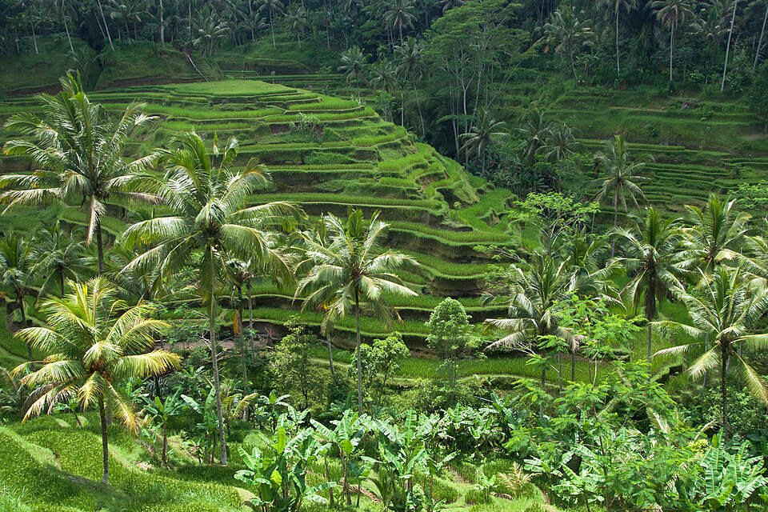
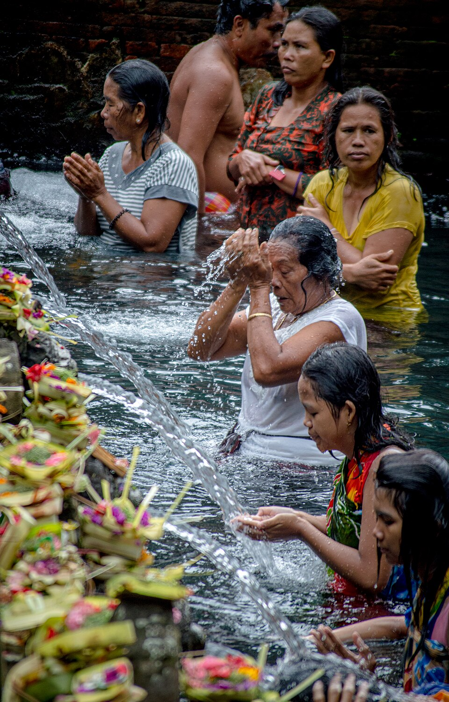
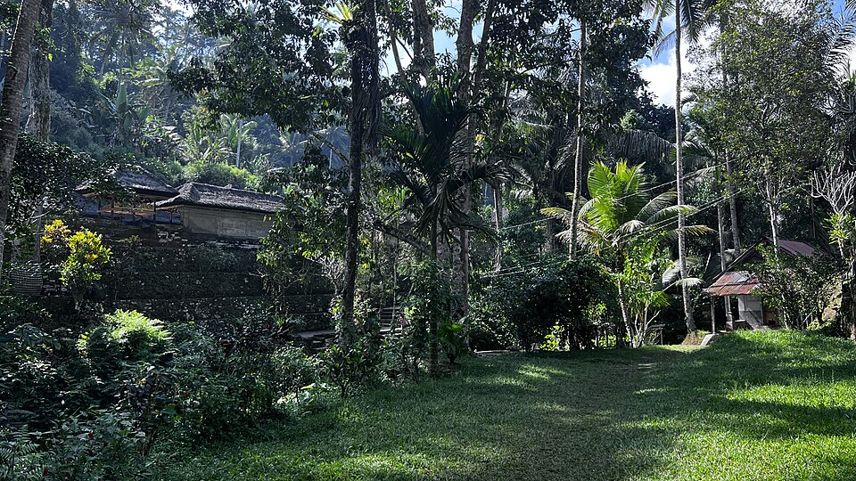
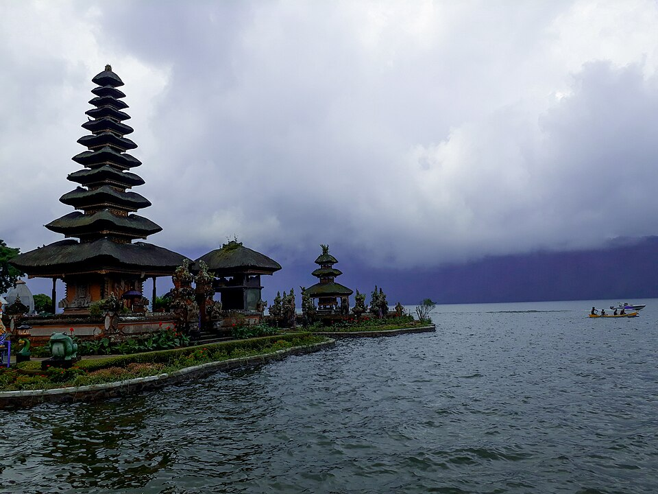
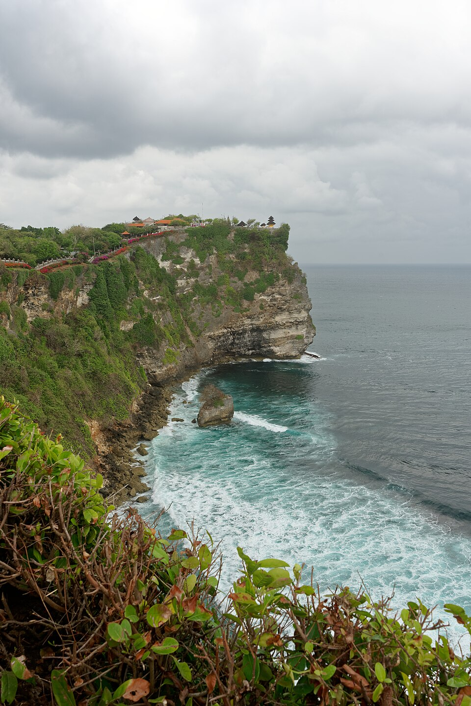
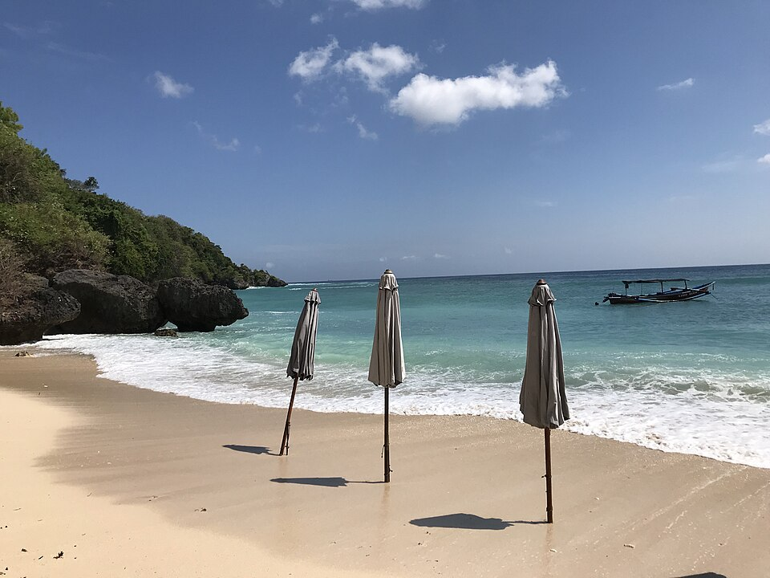
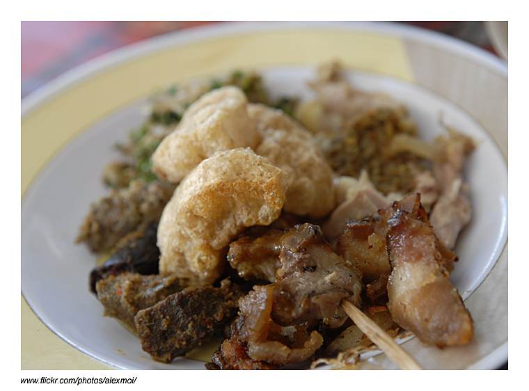
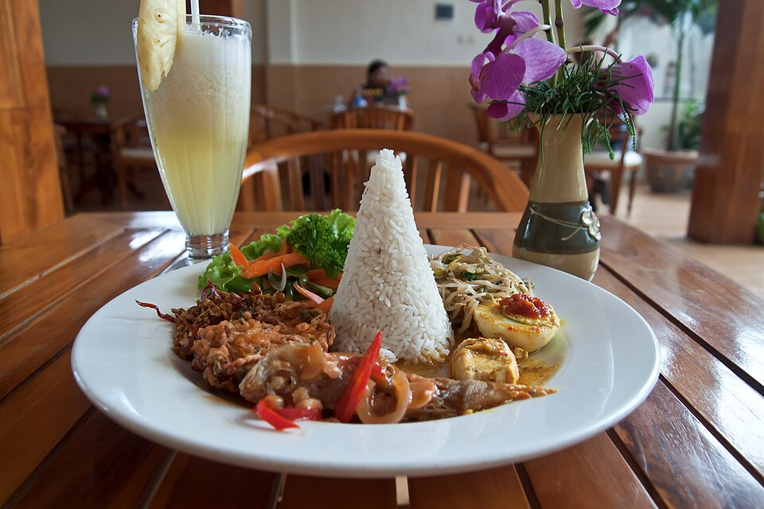

方案 B · 🥉 最有旅行感
大城市×跨國旅行×火山島×印度教文化×海灘×Resort——三組裡「旅行場景切換感最強」的一組，但也最看老天臉色。
2026.12.25 → 2027.01.03 · 9 晚 10 天

曼谷是超大型亞洲都市；飛四個多小時後突然變成稻田、印度教寺廟、火山、海灘、熱帶森林——旅行場景切換感非常強。曼谷負責佛教＋超大型都市，峇里島負責印度教＋稻田＋海＋火山島，兩個國家文化差異非常大，會記得的是「那趟真的有出去旅行的感覺」。
⚠️ 最大風險：12月底～1月是峇里島雨季。不代表每天一直下雨，但可能出現午後雷雨、塞車惡化、海況不佳、日落行程泡湯——峇里島每天最好留 20～30% 彈性，不能排得像日本行程一樣密。
同泰國方案：Siam、CentralWorld 聖誕佈置餘溫、晚餐、按摩。落地後不排太硬，細節見 🇹🇭 泰國方案頁。
大皇宮、臥佛寺、鄭王廟、唐人街——與泰國方案 12/30 行程相同，詳見 🇹🇭 泰國方案頁的完整景點介紹＋必看必吃。
Benchakitti Park、Phrom Phong、Siam、ICONSIAM，晚上早點休息——今晚要早睡，明天一早飛峇里島。
不要住 Kuta 再換，直接前往 Ubud。

烏布傳統王室建築，雕花木門與石雕守護神是典型峇里島宮廷建築風格，晚上宮殿前廣場常有傳統甘美朗（Gamelan）舞蹈表演。市區小巷混合藝廊、瑜珈中心與有機餐廳，是峇里島文化與慢活氣氛最濃的城鎮。
👀 必看：皇宮雕花大門、夜間傳統舞蹈表演（Legong / Kecak）

峇里島最具代表性的梯田景觀，層層堆疊的綠色階梯沿山坡蔓延，使用峇里島傳統的「Subak」灌溉系統（已列入UNESCO世界遺產文化景觀）。清晨光線最美，也可以在田邊咖啡座坐下慢慢看。
👀 必看：層疊梯田全景、田間鞦韆拍照點

峇里島最重要的印度教淨身聖地，泉水從地底湧出注入石造水池，當地人與遊客都會在此進行 Melukat 淨身儀式——依序在不同噴水口沖洗祈福。寺廟本身建築精緻，是體驗峇里島宗教生活最直接的地方。
👀 必看：淨身水池與湧泉噴口、寺廟石雕建築群
⚠️ 提醒：參與淨身需準備沙龍（現場可租借），尊重當地宗教儀式

11世紀鑿刻在河谷懸崖岩壁上的巨型皇陵遺址，10座神龕直接從天然岩壁雕出，要走下數百級台階、穿過稻田步道才能抵達，人潮比熱門景點少很多，是峇里島最原始壯觀的古蹟之一。
👀 必看：崖壁巨型神龕群、通往谷底的稻田石階步道
如果下雨：把寺廟和咖啡館當主體，室內活動優先。
這天景色非常強，但車程也長。

建在布拉坦湖畔的水神廟，多層黑色茅草屋頂（Meru）倒映在湖面上，晨霧繚繞時尤其夢幻，是峇里島最具代表性的湖景畫面之一，印在印尼5萬盾紙鈔上。
👀 必看：湖畔多層茅草塔、晨霧中的倒影
建在離岸礁岩上的海上廟宇，退潮時可步行靠近，漲潮時被海水環繞如浮在海面。日落時分廟宇剪影配上橙紅天空，是峇里島最經典、最多人拍照的畫面。
👀 必看：日落時分的海神廟剪影（務必抓準日落時間前往）
選擇很多：Beach Club、飯店 NYE Party、Seminyak、Canggu 街區。
⚠️ 提醒：Beach Club 跨年通常不便宜，預算有限的玩法是在 Seminyak / Kuta 找公開區域＋酒吧即可

建在70公尺高懸崖邊緣的印度教寺廟，是峇里島六大聖廟之一。日落時分寺廟前廣場會上演傳統 Kecak 火舞（由數十名男性合唱團圍圈吟唱，沒有樂器伴奏），搭配斷崖日落背景，是峇里島最震撼的文化體驗之一。
👀 必看：70公尺斷崖海景、日落 Kecak 火舞表演（建議提前買票入場）
⚠️ 提醒：寺廟區猴子很多，眼鏡、飾品要收好

藏在石灰岩峽谷裂縫裡的白沙灘小海灣，需穿過狹窄石階入口才能看見沙灘全貌，因電影《享受吧！一個人的旅行》取景而聲名大噪，也是峇里島知名衝浪點之一，適合安排在 Uluwatu 行程前後順遊。
👀 必看：峽谷入口石階、白沙灣全景

峇里島最具代表性的傳統料理，整隻小豬塞入薑黃、香茅、辣椒等香料後慢火炭烤，外皮酥脆、肉質軟嫩，通常配白飯、血腸與蔬菜一起吃，Ubud 有多間名店常大排長龍。

白飯配上多種小菜自由搭配——沙嗲、天貝、參巴醬、炸物、時蔬，每家配料組合都不同，是體驗峇里島家常味最方便的一餐，幾乎每間路邊餐廳（Warung）都有。
| 項目 | 預估 |
|---|---|
| 台北→曼谷＋曼谷→Bali＋Bali→台北 | NT$17,000～25,000 |
| 9晚住宿 | NT$8,000～14,000 |
| 餐飲 | NT$4,500～7,000 |
| Bali 包車／Grab | NT$3,000～5,000 |
| 景點 | NT$2,000～3,000 |
| 印尼 VOA／eVOA 等入境成本 | 約 NT$1,000 |
| 其他交通 | NT$1,500～3,000 |
| 總計 | 約 NT$38,000～58,000 |
省錢極限：NT$38,000～42,000 舒服玩：NT$45,000～52,000
⚠️ 如果參加高級 Beach Club NYE，很容易突破 NT$55,000～60,000。